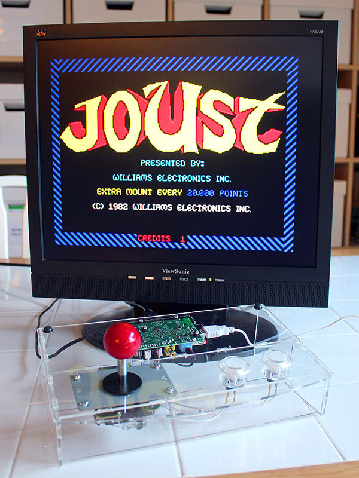

Life With Pi: Microcomputing in Academia
Allie Verbovetskaya, Junior Tidal, Robin Davis, & Stephen Zweibel
A Brief Introduction
↓What's a microcomputer?
- Cheap
- Small
- Open source
- Computer
Raspberry Pi
$35.00

BeagleBoard BeagleBone
$89.00

Arduino Uno
$29.95

What are they for?
Hobbies
Special Needs & Interests
Data Collection

But I'm not a programmer!
Why should I bother?
- Uses beyond recreation
- Ripe for inclusion in academia
Pedagogy
↓- Applications in the Classroom
- Class Webserver
- Repository for Coursework
Applications in the classroom
- In-class research stations
- Cross-disciplinary projects
- Testing environment for coding class projects
Class Webserver
- Class specific webserver on an SD card
- A webserver on every student's desk
- Virtual space for collaborative learning
Repository for Coursework
- The paperless classroom
- Classroom/coursework cloud storage or repository
- Archive for past courses
Research
Applications in the lab & studio
Cheap, disposable computing

- Sensors!
- Clusters!
- Prototypes!
- Integration with other machines!
Advantages
- Low-cost (stretch that grant!)
- Tight control over your machines
- Build on code others in the community have contributed
- Publish & brag
Sample publications
Low-cost Photoplethysmograph Solutions Using the Raspberry Pi
Basic Neuroscience: An Inexpensive Arduino-based LED Stimulator System for Vision Research
Integrating Social Network Services with Vehicle Tracking Technologies
In Situ Measurements of Phytoplankton Fluorescence Using Low Cost Electronics
Hover for full citations
Literacy
Literacy!
- Reading & Writing
- Digital
- Computational (Software & Hardware)
What is Computational Literacy?
Algorithmic thinking
Basic understanding of how computers work
Capability to collaborate
Why Now?
The Internet of Things
- Merging of the physical and digital realms
- Proliferation of internet-connected sensors and actuators
- Smaller, more flexible/expendable computing technology
(According to the Open University)
Analogy to reading
Important when required for government
Infrastructural when society came to depend on it
Vee, Annette. "Understanding Computer Programming as a Literacy." Literacy in Composition Studies 1.2 (2013): 42-64.
Computational Literacy in practice
def Hello world:
print('Hello world!')Can you read this?

What about this?
We drive cars, do we all need to be mechanics?
Not about becoming a programmer
Awareness of technology in society
Fluency in technology news: NSA, Google Books, etc.
Technical knowledge hepful for effective leadership
Computer hardware: cheap
Development software: often free
Computational Literacy: Priceless
In your English class:
Investigate how computers interpret language through Natural Language ProcessingIn your Biology class:
Program sensors to monitor (and email updates on) the growth of a plantIn your Sociology class:
Discuss the 'Quantified Self', track and compare personal life dataDemonstrations
Questions?
Get in touch
Allie Verbovetskaya, @alevtina
Junior Tidal, @juniortidal
Robin Davis, @robincamille
Stephen Zweibel, @zwounds